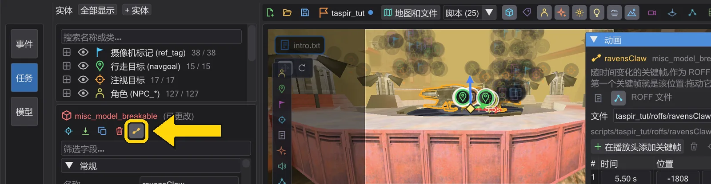
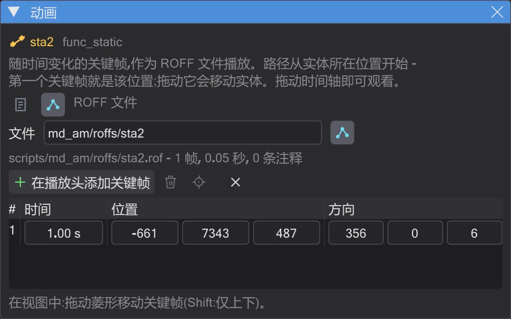
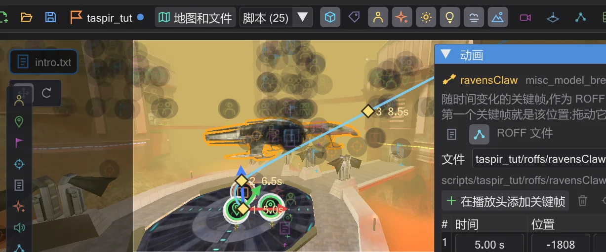
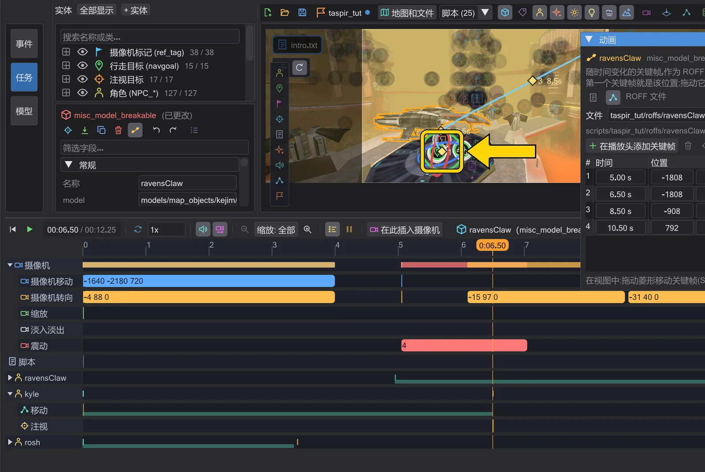
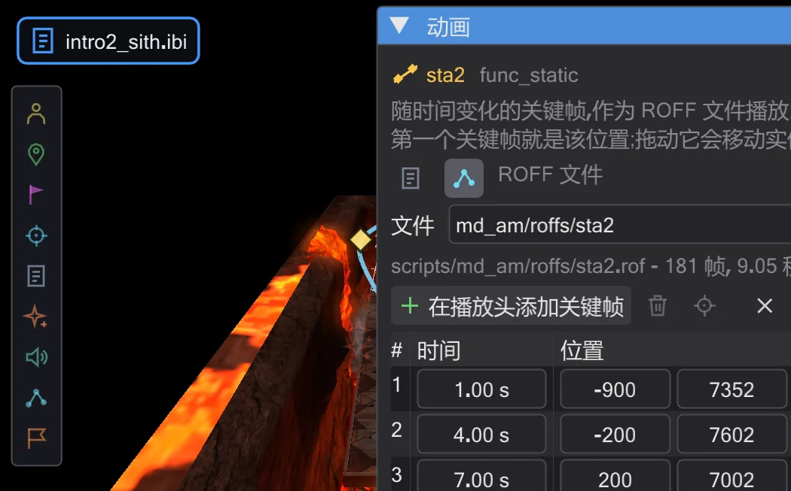
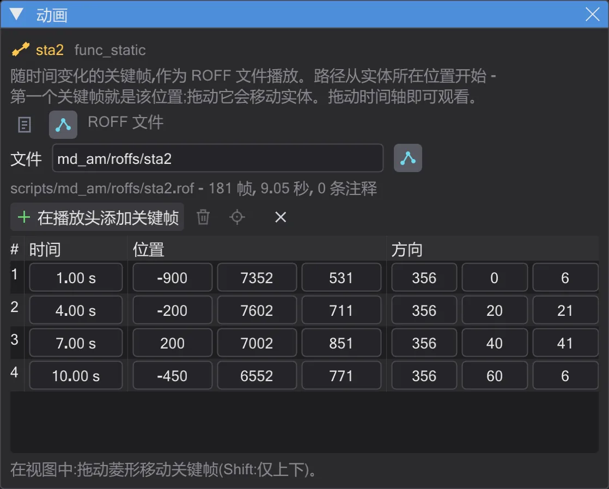

教程
飞船沿 ROFF 路径飞行
为竞技场上空的飞船制作一段带转弯的自由飞行——生成 ROFF 文件,用操纵器旋转,并为游戏保存。
步骤#
- 1
选择飞船。 在
md_am_sith中单击地图上的飞船sta2。检查器显示一个func_static。
已选中飞船。 - 2
以 ROFF 方式打开动画。 在检查器中按 动画,把时间轴设为 1 秒,按 ROFF 文件。脚本中会加入带有
play ( "PLAY_ROFF", "md_am/roffs/sta2" )的块;第一个关键帧就是飞船当前的位置。
ROFF 模式下的 动画 窗口。 - 3
设置后续关键帧。 把时间轴移到 4 秒,按 在播放头添加关键帧,把新菱形拖过竞技场。在 7 秒和 10 秒重复。开启 平滑 后,路径会成为穿过所有菱形的一条曲线。

四个关键帧,一条平滑曲线。 - 4
旋转飞船。 把时间轴设为 7 秒,将操纵器切换到 旋转,拖动红色圆环:飞船在转弯中倾斜。由于窗口正显示这艘飞船,操纵器会在 7 秒处设置关键帧,而不是修改起点。

红色圆环让飞船在 7 秒处倾斜。 - 5
观看。 按地图下方的播放按钮(▶)。时间轴在 移动 下以条带显示这段飞行;拖动可让它提前或推迟开始。

飞行中的飞船。 - 6
保存。 Ctrl+S 写入脚本——第一次会询问保存位置,请选择模组的
scripts文件夹。在同一 scripts 文件夹中会写出md_am/roffs/sta2.rof;状态栏会显示文件名。保存任务 会把它放进任务的.pk3。
窗口中的文件名和时长——保存时写出文件。


ROFF 文件的原理以及如何编辑游戏中的 ROFF:移动物体动画与 ROFF 文件。